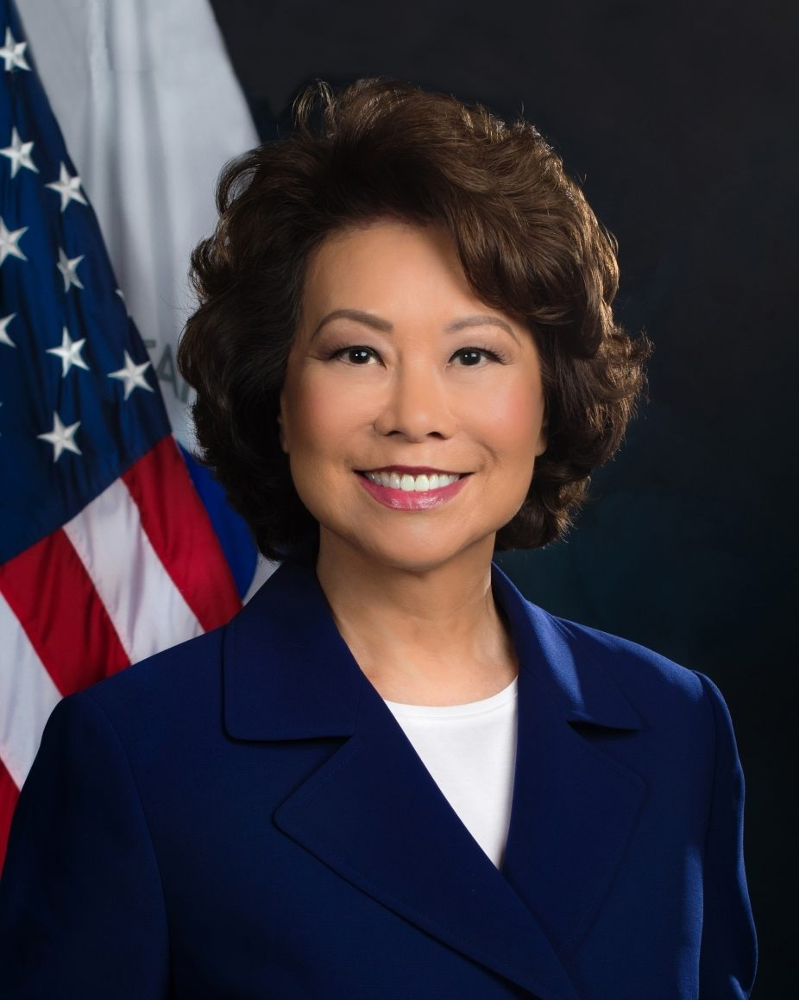

한정 부주석, 美 전 운수장관 자오샤오란 회견
중국 한정 국가부주석이 미국의 전 운수장관 자오샤오란(일레인 차오)을 만났다. 양국 간 민간·경제 교류의 통로를 유지하려는 행보로 읽힌다.
여년재 기자 · 2026.06.18
橋외교·미중

인민망은 한정(韓正) 중국 국가부주석이 미국의 전 운수장관 자오샤오란을 만났다고 전했다. 회견에서는 양국 관계와 경제·인문 교류의 중요성이 거론된 것으로 전해졌다.
광고 문의 · 300×250자오샤오란은 미국에서 노동장관과 운수장관을 지낸 화인 정치인으로, 미·중 사이의 인적 가교로 여겨져 왔다. 정부 인사와 전직 각료의 만남은 공식 채널 외의 소통 창구로 기능한다.
미·중 관계가 경쟁과 갈등을 오가는 국면에서, 민간·경제 영역의 교류 유지는 충돌의 완충 장치가 될 수 있다는 평가가 나온다.
華橋時報는 이를 미·중 교류의 한 장면으로 중립적으로 전한다. 양국 관계의 흐름은 전 세계 화인 사회의 통상과 이동에 두루 영향을 미친다.
출처·참고 (사실 확인용 — 본문은 직접 재작성)
· 人民網
· 人民網